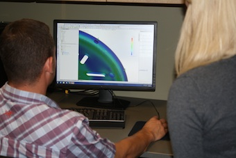

Engineering Services
c2renew has engineering services to design plastic and composite components using biobased materials or traditional materials for your application. Experienced engineers on staff can design and test solutions using a full suite of 3D design, finite element analysis (FEA), and mold simulation software. Design options include producing a new part from scratch in tandem with a custom biocomposite material, or we can also design biocomposites as drop in replacements to work with a part already in production. We specialize in utilizing natural and recycled materials in place of virgin polymers, but we also have a strong background producing solutions using more traditional materials like fiberglass and carbon fiber.
